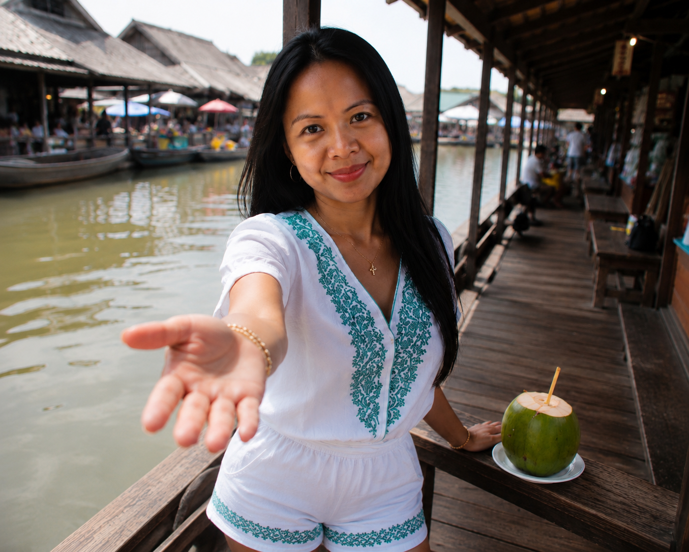
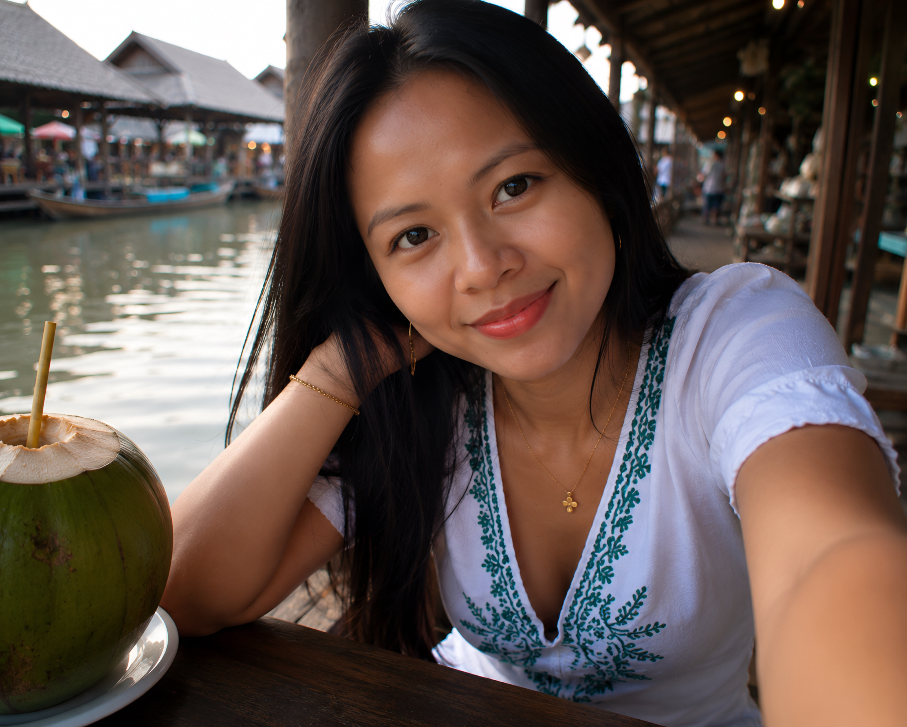

I
Joyce reaches out her hand with an inviting smile, encouraging me to come with her as we begin exploring the floating market together. First-person perspective that emphasizes trust, excitement, and the beginning of our Thailand vacation.

II
Our first quiet moment together at the floating market. Joyce leans across the wooden table with a warm, affectionate smile, making direct eye contact as if we're about to share our first kiss. A fresh coconut sits beside us, soft morning light reflects off the canal, and the bustling Thai market fades into a dreamy background. The feeling is relief, comfort, and finally being together after months apart.

III
Our first breakfast together overlooking the canal. Joyce sits patiently across from me with a gentle smile while we enjoy fresh coconut water and watch boats drift past. Peaceful, relaxed, authentic, romantic vacation atmosphere.

IV
A candid portrait of Joyce after spending hours wandering the floating market together. She looks genuinely happy, relaxed, and thankful to finally share this long-awaited vacation with me.

V
Joyce pauses beside the canal after shopping for souvenirs, giving me a quiet smile reserved for someone she deeply cares about. Warm afternoon light, authentic Thai floating market, romantic travel memories.

VI
Joyce poses playfully beside one of the wooden market posts while waiting for our boat ride. Her relaxed body language reflects the comfort and happiness of a couple finally together after a long-distance relationship.

VII
Walking ahead of me along the wooden boardwalk, Joyce turns over her shoulder with a warm smile to make sure I'm still beside her. A spontaneous, affectionate travel memory from our Thailand adventure.

VIII
Joyce extends her hand toward me with a loving smile, inviting me to continue exploring hidden corners of the floating market together. First-person perspective that makes the viewer feel like her boyfriend.

IX
An artistic overhead angle captures Joyce sitting along the edge of the wooden boardwalk beside the canal. She glances upward with a spontaneous smile, creating a candid travel photograph full of warmth and personality.

X
We pause for fresh coconut drinks overlooking the canal. Joyce rests her chin on her hand and smiles softly while enjoying our conversation. An intimate, peaceful moment that perfectly captures the joy of finally sharing this Thailand vacation together.

XI
As the afternoon winds down, Joyce looks back with a gentle farewell wave before we continue toward the boat dock. A bittersweet end to another perfect day exploring the floating market together.